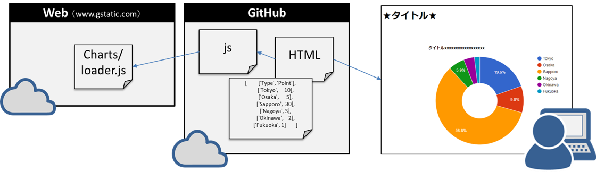
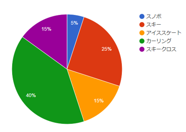
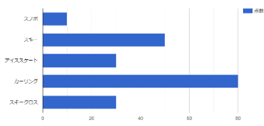
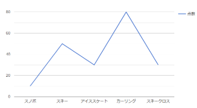

Google Chart ライブラリを使うと、数行のコードでキレイなグラフを描画できる。

何度も作成するHTMLは、空っぽの最小限のHTMLを用意しておくと便利なので、[template.html]を準備する。
<!DOCTYPE html>
<html lang="ja">
<head>
<meta charset="UTF-8">
<meta http-equiv="X-UA-Compatible" content="ie=edge">
<title>★タイトル★</title>
<meta name="viewport" content="width=device-width, initial-scale=1, shrink-to-fit=no">
</head>
<body>
<h1>★タイトル★</h1>
</body>
<script type="text/javascript">
</script>
</html>例えば[chart.html]などという名前で新しいファイルを作る。空のHTMLタグは[template.html]からコピペする。★★の部分は自由に置き換えする。
<!DOCTYPE html>
<html lang="ja">
<head>
<meta charset="UTF-8">
<meta http-equiv="X-UA-Compatible" content="ie=edge">
<title>★タイトル★</title>
<meta name="viewport" content="width=device-width, initial-scale=1, shrink-to-fit=no">
</head>
<body>
<h1>★タイトル★</h1>
★ここに（３）のタグを追加する★
<div id='myChart'>★タイトル★</div>
</body>
★ここに（４）のコードを追加する★
<script type="text/javascript">
★ここに（５）のコードを追加する★
★ここに（６）のコードを追加する★
</script>
</html>divタグでidを指定する。ついでに縦横のピクセルサイズも指定する。
<div id="myChart" style="width: 900px; height: 500px;"></div></body>と<script タグの間にライブラリを呼び出すためのリンクを追加する
<script type="text/javascript" src="https://www.gstatic.com/charts/loader.js"></script>google chart ライブラリを準備して、配列データを data にセットする。配列のデータは自由に書き換えする。
// グラフを描画するための[corechart]パッケージを読み込む
google.charts.load("current", {packages:["corechart"]});
// 変更されたら[drawchart]を実行する
google.charts.setOnLoadCallback(drawChart);
// データを[data]にセットする
function drawChart() {
var data = google.visualization.arrayToDataTable([
['競技', '点数'],
['スノボ', 10],
['スキー', 50],
//ここにデータを追加したり、名前や数値を変更できる
]);
| 競技 | 点数 |
|---|---|
| スノボ | 10 |
| スキー | 50 |
| スケート | 30 |
準備したデータを使ってグラフを 'myChart' ID の場所に表示する。以下のコードをデータの次に描く
var chart = new google.visualization.PieChart(document.getElementById('myChart'));
chart.draw(data);<!DOCTYPE html>
<html lang="ja">
<head>
<meta charset="UTF-8">
<meta http-equiv="X-UA-Compatible" content="ie=edge">
<title>★タイトル★</title>
<meta name="viewport" content="width=device-width, initial-scale=1, shrink-to-fit=no">
</head>
<body>
<h1>★タイトル★</h1>
<div id="myChart" style="width: 900px; height: 500px;"></div>
</body>
<!-- google script -->
<script type="text/javascript" src="https://www.gstatic.com/charts/loader.js"></script>
<script type="text/javascript">
google.charts.load("current", {packages:["corechart"]});
google.charts.setOnLoadCallback(drawChart);
function drawChart() {
var data = google.visualization.arrayToDataTable([
['競技', '点数'],
['スノボ', 10],
['スキー', 50],
['アイススケート', 30],
['カーリング', 80],
['スキークロス', 30]
]);
var chart = new google.visualization.PieChart(document.getElementById('myChart'));
chart.draw(data);
};
</script>
</html>
コードを VScode の Live Server で実行してみる。

グラフを追加するので divタグで idを追加します。例えば myChart2 を mychart の次の行に追加。
<div id="myChart" style="width: 900px; height: 500px;"></div>
<div id="myChart2" style="width: 900px; height: 500px;"></div><!-- 追加 -->そして棒グラフの描画を追加する
var chart = new google.visualization.PieChart(document.getElementById('myChart'));
chart.draw(data);
//下記を追加
var chart = new google.visualization.BarChart(document.getElementById('myChart2'));
chart.draw(data);コードを VScode の Live Server で実行してみる。

３つ目のdivタグ idを追加して。google.visualization.LineChart を追加する。実行して下図を確認する。

［ボタン］を設置して、配列データを変化させて動的にグラフを描画する。これが出来るなら自動的にデータを更新してインタラクティブなWEBサイトを公開できるはず。